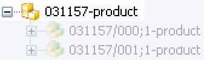
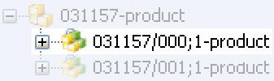

Where is NX data in Teamcenter?
Native NX users are accustomed to browsing through operating system folders in search of part (.prt) files.
-
Teamcenter stores the part (.prt) files in a database and uses data objects to symbolically represent them. Data objects function as a reference to the actual object in the database.
-
Teamcenter Integration for NX folders look like folders in a file system, although they are more like envelopes: they carry messages and information but do not have your parts, assemblies, or drawings in them.
-
Using this symbolic reference, access to a single object can be made available to many users.
Items and item revisions are the fundamental objects used to manage information in Teamcenter.
-
Items are structures that represent a product, part, or component. Items can contain other data objects, including other items and folders.

-
Item revisions are used to manage changes (revisions) to your product information.

-
Item revisions contain information related to a revision in addition to the NX dataset. Datasets manage data files created by applications outside of Teamcenter. This example is an NX dataset.

This is a simple overview which may be redundant if the students have taken the prerequisite Teamcenter course.